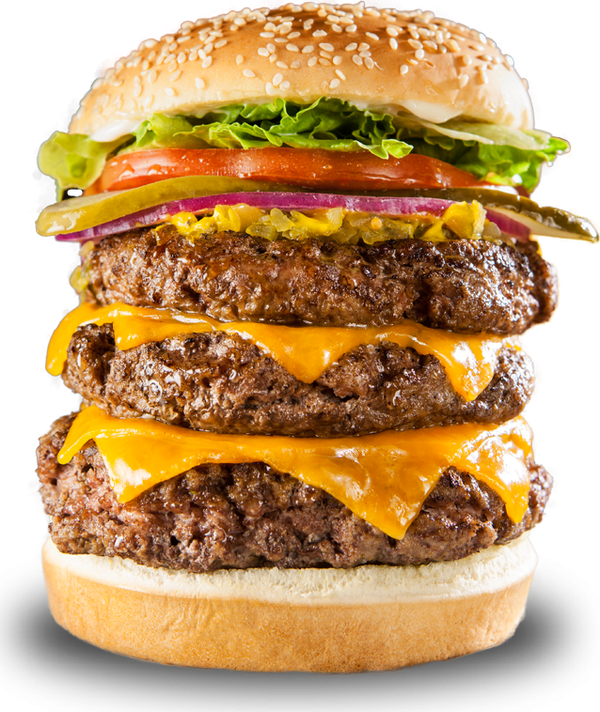
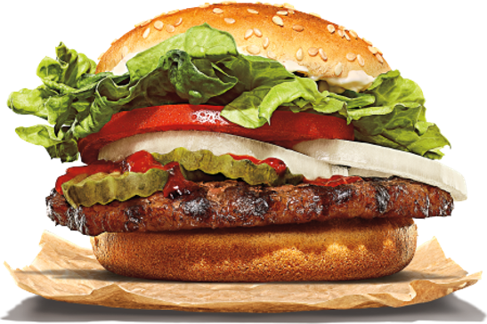
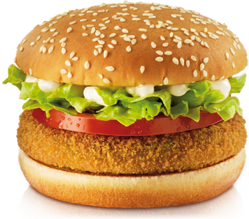
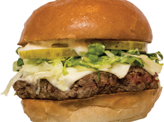

Class exercise · about 10 minutes · work with a neighbor
What are the best solutions?

Beef burger
A patty made from beef cattle.

Burger King's plant-based Whopper
A fast-food burger with a plant-based patty.

Vegetarian burger
A patty made from vegetables and grains.

Impossible Burger
A plant-based patty made to taste like beef.
Look atAnimals and ethicsHow are the animals raised and treated?
Look atCO₂ and methaneHow much of these gases does it release?
Look atChemicalsWhat is used to grow and make it?
Look atThe environmentWhat does it do to land, water and wildlife?
Look atFood sovereigntyWho controls the food: farmers and communities, or a few big companies?
10:00
Your job: pick one burger. List at least 3 reasons for and 3 against. Then answer on the next slide.